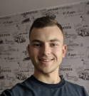

Pavel Noryk
Phone: +375445704971
Email: pnoryk@gmail.com
Objective
Applying for a position of Middle Frontend Developer
Summary
I am a purposeful and highly motivated person who can adjust quickly to new surroundings.
My personal qualities such as sociability and dependability make me good at teamwork.
I am well organized and reliable which I believe is a key to success.
Skills
I started to learn Python in 2015.
Python Framework: Django, DRF, FastAPI, asyncio
Frontend: HTML, CSS, JS(ES6+), Vue
Database Management: SQLServer, PostgreSQL
Tools: Git, Docker, GitlabCI, RabbitMQ
English Level: Intermediate
Education
-
From 2015 to 2019 — BNTU FITR
Speciality: «Программное обеспечение информационных технологий»
Grade Point Average: 8.5
Year of graduation: 2019
Employment History
- 03/2019 - today: Software developer in ООО “Вайсвеб” company